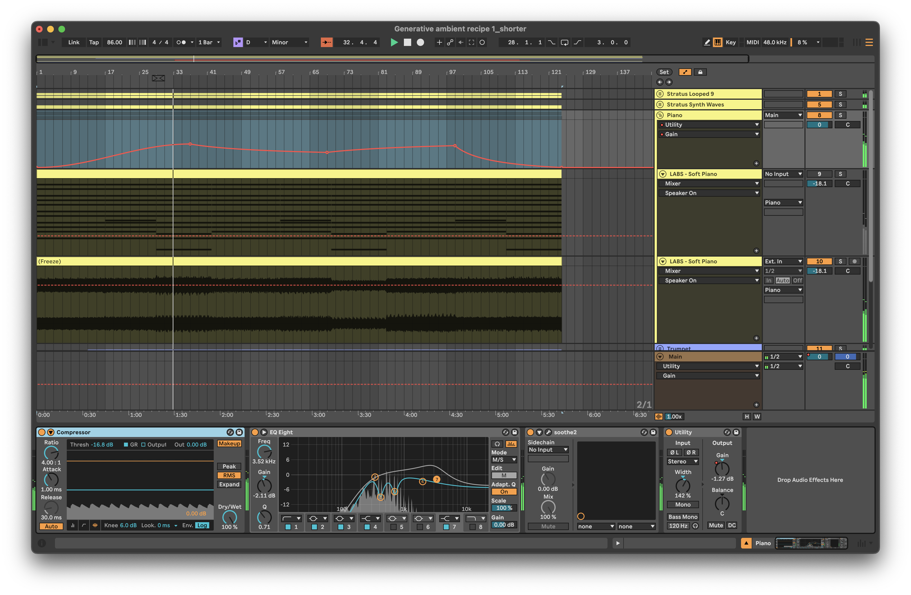

Process - Workflow: capturing generative ideas
Setting up an Ableton Live set with lots of MIDI generators, MIDI manipulation and transformation, using that generated MIDI to create a nice collage of sounds that shifts and changes over time is very satisfying. From a performance perspective, once set up, you can press play and let it do its thing. But what if you want to commit the state of the system to share with others. That involves capturing the generated MIDI, modulations and generated audio. This chapter will discuss how you might go about capturing the processes so that you can later release the track.
Key idea
I find it useful to separate MIDI tracks that generate and transform MIDI information from instrument tracks that receive that MIDI information and generate sound. The idea is to capture the generated and transformed MIDI for later processing. It can then be copied into the instrument track and “bounced down” or rendered with the instrument track to capture the sound. I then group all of the tracks (MIDI generator and MIDI devices, instrument track with captured MIDI, bounced down audio) and apply mix FX at the Group level. In this process don’t worry about having more tracks than you think necessary. This will give more flexibility and options in the capturing process. There is quite a large difference between Live sets for performance and Live sets for capturing and committing the performance for release.
In the beginning
When you first start creating Live sets for generative music, the important thing is to have fun with the process. So throw MIDI devices into chains, see what happens, refine and reapply. Route MIDI from one place to another, add more MIDI transformations. Go wild. Play. Inevitably though, at some point, you’re going to want to apply a little order to the chaos. And in fact, even in the creation process taking a little time to plan ahead can open up some new avenues for generating, transforming and routing.
Random processes are random
If you have used any randomness within processes (and if you haven’t why haven’t you been paying attention up to this point?) then what you’ll find is that each time you re-open and play the Live set, you should get a slightly different sounding result. It may not be radically different, but it is likely to be different enough, that when it comes to mixing before committing to a version of the piece, you find some parts that are thinner than expected, or some where there are peaks of volume or resonance that become problematic for mixing.
In that case, it makes sense to try to capture or “render” the MIDI, instrument and sound design choices so that you can mix and tweak to get towards a consistent output.
In extreme cases you may find, as you capture the output of the random processes that you don’t like the output. In that case you might want to refine these random processes - maybe make them slightly less random - or tweak settings to try to avoid extreme changes in sound design through reducing modulation levels. But the other option, to be honest is to throw that version away and re-render and re-capture the output to see if the random processes spit out something better next time. Don’t feel you have to be precious about the output of some random process. There are many more versions of the random processes readily available.
How to set up Live sets - my experience
MIDI Generators
I like to have separate tracks for MIDI generators. These are the “starting point” of a process. They will be generating MIDI notes through random processes, patterns or Follow Actions . I like to keep the generators separate from the transformation MIDI tracks, because you may want to send the same generated MIDI notes into several transformation chains. This will lead to a more coherent result since different transformation chains ingest a consistent set of generated MIDI input notes.
MIDI Transformer tracks
These tracks will take the MIDI generator process outputs and apply MIDI effects and transformations to add additional MIDI notes, information, modulation etc. You could have a virtual instrument / sound generator plugin in this track. If you do that, then you can route the MIDI from this track AFTER (MIDI) FX into another track for further transformation, MIDI effects or to another instrument.
Capturing the MIDI
To capture the random processes from the generation and transformation steps, you should create new MIDI tracks that “listen” to the output of the generation and transformation tracks. In my Live sets I typically have a lot of tracks where the Monitor is set to “In” or “listening” mode. That passes the incoming audio from another track straight through to the effects or instruments on that track. Having separate “capturing” MIDI tracks allows you to pick up the generated and/or transformed MIDI when you record. This is a good thing to be able to “tidy up” or “garden” the generated MIDI information on the road to release. Don’t feel you have to keep the MIDI output from these processes unchanged. It’s just MIDI. Feel free to cut, move, edit, splice until you get something that you prefer.
If you record only into tracks where there is MIDI effects and instruments then the transformed MIDI is never captured - only the original generated MIDI. This may not be a problem per se but when you render out the final audio, you are at the mercy of Live’s internal random processes and you’ll be crossing your fingers that either the result is the same as you heard previously (if Live replays the randomness in the same way each time) or potentially different (perhaps if you reopen the set in a later version of Live).
If you capture the generated and transformed MIDI in separate tracks, then you can use these tracks as the input for tracks with virtual instruments / plugins in them. Where these tracks might have had MIDI Monitor set to “In” you can now switch that back to “Auto” so that the captured MIDI is used directly as the input for that instrument.
Once you have captured the generated and transformed MIDI it’s safe to switch off the generators and MIDI effects in those tracks. This will ensure that it’s only the captured MIDI that is being used to drive the virtual instruments and plugins.
In the screenshot below I have captured the Follow Action chord sequence, and have added some MIDI effects - Arpeggiator, Pitch and Velocity, before routing these into the LABS virtual instrument. Since the MIDI effects here don’t involve randomness, it’s safe to keep these “inline” with the virtual instrument. If I had used randomness, then it might make more sense to have a separate MIDI track that captures the output of those transformations before sending into the virtual instrument.
Rendering / bouncing down to audio
In the screenshot below I’ve rendered the MIDI part and virtual instrument to an audio file. This then will “bake in” any MIDI transformation - in this case the arpeggiator, pitch shift up an octave, and the velocity curve. Note that I render or “bounce” the output to a new track, leaving the original in place. This allows me to come back later and tweak the original settings or re-render without having to undo many actions.
Since the MIDI input clips with Follow Actions have probability on each note (see Recipe - Changing chords for more information) then there’s a chance that one or two of the generated MIDI chords will have only two notes (down to the probability choices). By rendering and listening back, I can assess whether I think the “choices” made through probability work with what else is going on or not. Perhaps there’s enough going on when the “thin” chord stack happens that it’s essentially hidden in the mix. If I really don’t like the result, I can re-render the audio.
Group tracks to tidy your Live set
With all of these tracks floating about it can be tricky to keep track of what track does what in your Live set. Live’s ability to group tracks is a really useful feature. It’s your choice how you group them… You can group MIDI generation and transformation tracks - the individual tracks will still send MIDI output to wherever they are routed - as this allows you to “fold away” the generation and transformation processes when it comes to capturing and committing for release (assuming you have captured the MIDI as described above and copied it into the tracks with virtual instruments / plugins).
Another really useful way to use Groups here is to Group the MIDI + virtual instrument and rendered audio together, then apply creative and mixing effects at the Group level rather than on individual tracks.
When I render down the MIDI + virtual instruments, I tend to render without creative and mixing effects as I often need to tweak these later, and it’s often problematic if I’ve committed to certain choices early in the process and baked this into the resulting audio. Instead what I have been doing is to Group the MIDI + virtual instrument track and moving the effects to the Group level (including modulation on Gain - see below) so that the rendered audio is purely MIDI + virtual instrument. This leaves space for me to tweak the creative and mixing effects later when I’m trying to tidy up the overall mix.
In the screenshot below you’ll see that on the Group for “Piano” I’ve got a compressor, EQ, Soothe dynamic EQ and Utility plugins (for automating gain).

Modulation on track volume - use the Utility device to modulate GAIN
If you have gone completely down the rabbit hole of random modulation of your track volumes, it may have been tempting to modulate the Mixer Volume so that tracks fade in and out in a random way. But let me caution against doing this. This technique is fine for performance, but when it comes to capturing and committing a generative track, the better solution is to modulate the Gain of a Utility plugin. Modulating gain allows you to separately alter the Volume slider on the mixer to change the overall level of a track relative to the others. This is a good tip for audio production generally - automate your track Gain, not your Mixer Volume.
Turn off what you’re not using
Having done these steps - Grouping, moving effects and rendering MIDI + virtual instruments I can now “switch off” the virtual instrument channel and save some CPU (as I’ve done in the screenshot below).